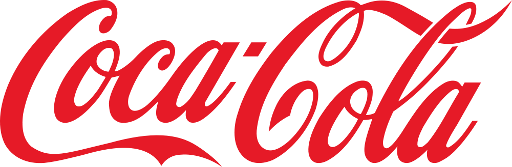

130여년이 넘는 역사의 기업답게 같은 콜라 생산 기업인 펩시와는 라이벌 관계이다. 동종 업체로 7년 이전 이직을 막는 법이 생기기 전까지 수많은 코카콜라 맨들이 펩시 맨으로 옷을 갈아입기도 했고, 미국의 일부 지역과 외국에서는 협력 관계가 되었던 적이 있었다. 이는 아직도 그러하다. 펩시는 콜라와 탄산음료로 승부해서는 코카콜라를 이기지 못하자 다른 청량음료를 개발하여 우회 공략을 시도하여 결과적으로 지금은 펩시의 회사인 '펩시코'의 전체 매출액이 코카콜라의 회사인 '코카콜라 컴퍼니'의 전체 매출액을 능가한다. 그리고 콜라 부분에서도 기타 음료에서 벌어들인 수익을 토대로 유명 패스트푸드 업체들을 하나씩 인수하여 각 매장에 때려 박고 유명 팝 스타들을 광고 모델로 기용하는 등 콜라 분야에서도 젊은 층 공략에 성공했다. 그러나 음료로 한정하면 코카콜라가 보통은 매출액이 조금 더 크다. 펩시의 경우, 음료를 제외한 일반 식품 영역 매출 50%를 넘어가기 때문에 전체 매출 영역은 음료에만 진출해 있는 코카콜라의 매출을 크게 앞선다. 약 2배 수준. 이때 이 두 콜라 회사의 전쟁은 'Cola Wars'라고 하며, 영어 위키백과에 문서까지 존재한다. # 펩시는 마이클 잭슨을 광고에 내세웠는데, 이때 펩시가 처음이자 마지막으로 코카콜라의 판매량을 뛰어넘었다. 다만, 마이클 잭슨 개인에게는 하나의 큰 흑역사로 여겨지는데, 광고를 찍던 도중 화상을 입어 기존에 있던 백반증이 악화된 것이다. 이 때문에 피부가 점점 하얘지기 시작했고, '백인이 되기 위해 피부 박피 시술을 받는다'라는 악성 루머가 생겨났다.
